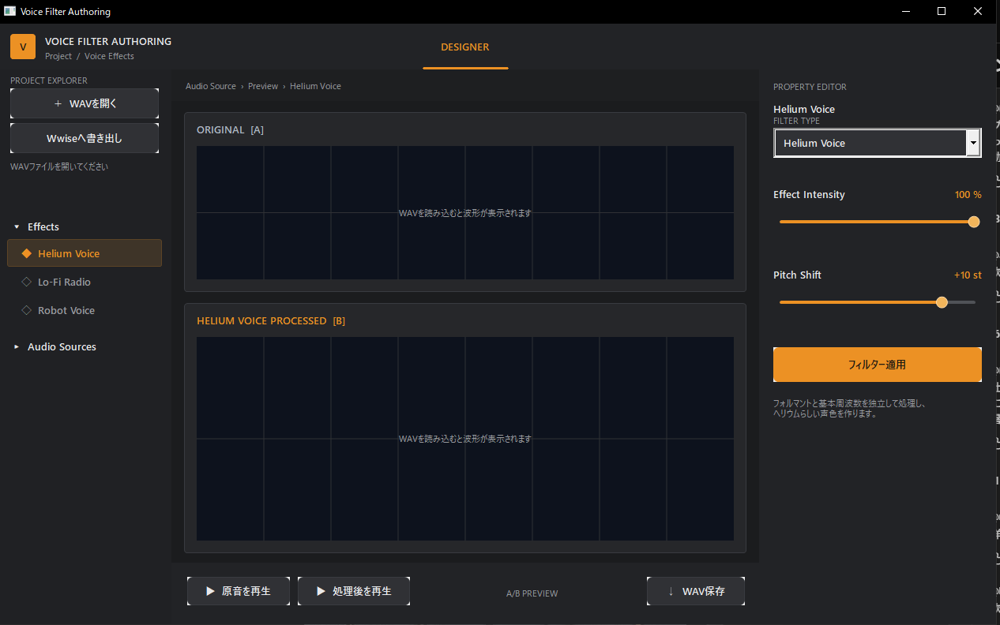
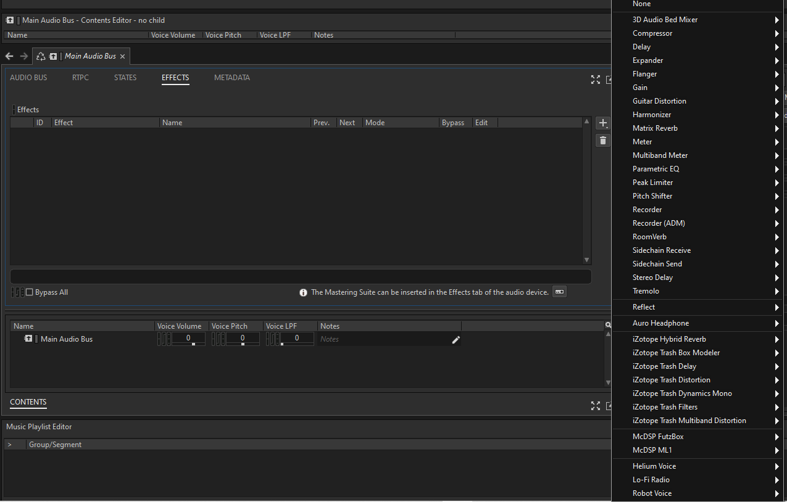
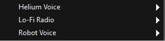

C++ / Wwise / 個人制作
Voice Filter Authoring

- 種別
- 音声制作・DSPツール
- 開発環境
- C++ / Win32 API / GDI+
- 連携環境
- Wwise 2025.1.9 / Windows x64
- 制作情報
- 個人制作
- 担当箇所
- DSP / GUI / Wwiseプラグイン連携
ボイスエフェクトの作成、波形確認、原音とのA/B試聴、WAV保存を一つの画面で行える音声オーサリングツールです。対応するボイスエフェクトをWwise Authoringとゲームランタイムで使うための、Effectプラグイン生成にも対応しています。
DSP & Listening Comparison
3種類のボイスフィルター
同じ「ようこそ」という短い音声（約0.8秒）に各フィルターを適用しています。再生ボタンから原音と処理結果を比較できます。
各フィルターの「原音 → 加工音で聴く」で、違いを続けて比較できます。
原音
各フィルターとの比較用音声
ヘリウムボイス
ピッチとフォルマントを調整し、明るく高い声質へ変換
無線ボイス
帯域制限、ビットクラッシュ、サンプルレート低下を合成
ロボットボイス
リング変調と短い遅延で金属的な声質を作り、ゲートで無音部のノイズを抑制
Technical Challenge / Wwise 2025.1
Wwiseプラグインの開発環境とビルド
Wwiseへの組み込みで最初に苦労したのは、SDK・ビルド環境の設定でした。Wwise SDKのプラグイン構成に合わせ、Authoring用DLLとゲーム実行用のSound Engineライブラリを、それぞれビルドできる環境を揃える必要がありました。
- 最初の課題
- Wwise SDK・Visual Studio・Windows SDKの構成と参照先を揃える環境設定。Authoring側とSound Engine側の両方をビルドし、Wwiseから認識できる出力先へ配置する必要がありました。
- 実装した工夫
- SDKとビルドツールの検出を組み込み、DLL・ライブラリのビルド、パッケージ化、Launcher用bundleの生成を一連の書き出し処理へまとめました。
- 失敗箇所の把握
- 環境が見つからない場合や、ソリューション生成・ビルド・パッケージ化で失敗した場合に、工程ごとのメッセージを表示します。
- 確認できた結果
- 下の画面のように、Helium Voice・Lo-Fi Radio・Robot Voiceの3種類をWwise AuthoringのEffect一覧から選択できる状態を確認しています。


Export Workflow
プラグインのビルドと配置の自動化
Wwise 2025.1 SDK、Visual Studio 2022、Windows SDK、Python Launcherを確認し、選択中のプラグインをRelease・Windows x64でビルドします。DLLとXMLはWwiseのPlugins配置へ出力し、配布用パッケージとbundleも生成します。
- 01環境を検出・対象を選択
- 02DLL・実行用ライブラリをビルド
- 03配置・パッケージ化・bundle生成
書き出しはワーカースレッドで実行し、完了メッセージをウィンドウへ返します。処理中は書き出しボタンを無効にして重複実行を防ぎ、完了後に再び操作できるようにしています。Wwiseを再起動してEffectの登録を確認します。
Authoring & Quality
比較試聴と過大出力・クリックノイズの対策
原音・処理後の波形表示、A/B再生、効果量調整、WAV保存に対応。異常値や瞬間的な過大出力を抑え、エフェクト開始時のクリックを防ぐデクリック処理も実装しました。
- Win32 APIとGDI+による3ペインGUI
- プラグインの公開パラメーターをRTPCで制御
- Wwise SDKテスト・Releaseビルド成功
Technical Focus / DSP
DSPの構成とノイズ対策
声の高さ・声質を変える処理と、加工で目立つノイズへの対策を実装しています。ヘリウムはツール版とWwise版で処理方式が異なります。
Tool / WAV Processing
ピッチ変換とスペクトル包絡による声質の調整
ツール版はFFTによるピッチ変換に、ケプストラムから求めたスペクトル包絡の移動を重ねます。声の高さと、フォルマントによる声質の変化を組み合わせた構成です。
- 01FFTでピッチを変換
- 02スペクトル包絡を求めて移動
- 03窓を重ねて波形を再構成・正規化
実装設定：FFT 2048点 / ホップ512サンプル
Wwise / Sound Engine
履歴バッファを用いたWwise版のピッチ変換
Wwise版は固定長の音声履歴を初期化時に確保し、2つの読み出し位置をずらして補間します。窓の重みを使って合成し、処理開始時は原音から加工音へ徐々に切り替えます。
- 01音声を履歴バッファへ保存
- 022つの位置から補間して読み出す
- 03窓の重みで合成・原音とミックス
実装設定：履歴4096サンプル / 開始時の変化1024サンプル
ロボットボイスの加工と無音部のノイズ対策
リング変調は声のない区間の小さな入力ノイズも目立たせます。入力の振幅を追うエンベロープと、滑らかに開閉するゲートを組み合わせています。
- 無音部のノイズ
- 入力振幅に応じてゲートを開閉し、語間の加工音を抑える
- 金属的な声質
- リング変調・短い遅延・滑らかな飽和処理を組み合わせる
- 孤立したスパイク
- 前後の値が近いのに中央だけ大きく離れるサンプルを補正する